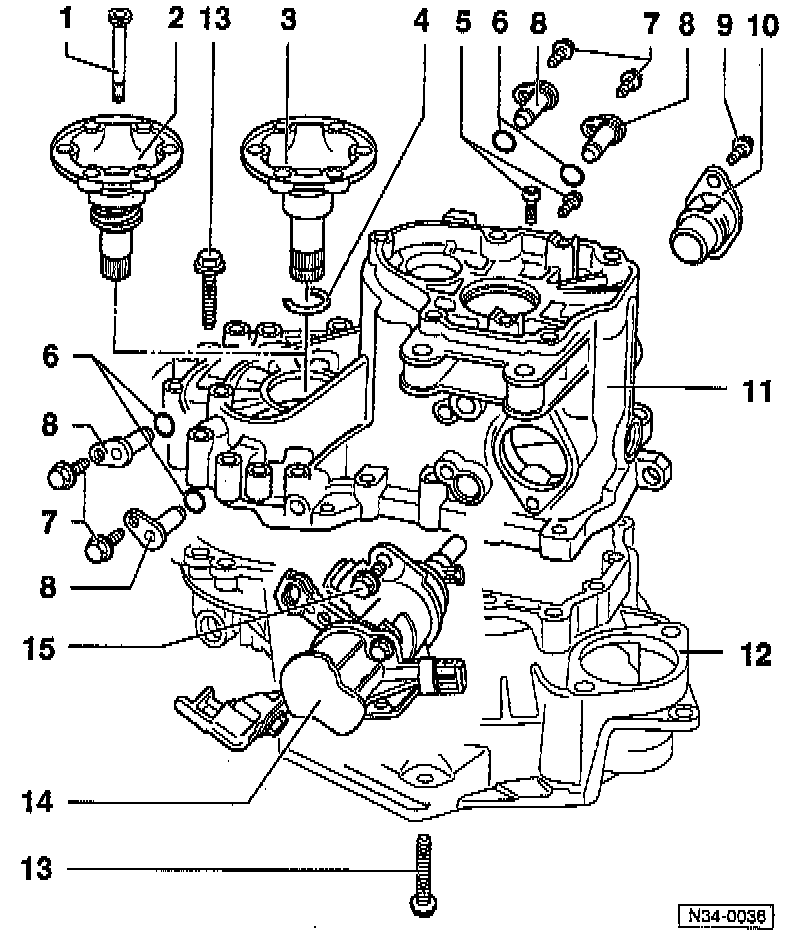

Transmission Housing and Selector Mechanism Remove/Install

COMPONENT NOTES AND INFORMATION
1 Cone-head bolt
- Installed in transmissions with springs behind axle flange shafts, refer to item -2-
2 Axle flange shaft with spring
- Removing and installing, refer to Differential Side Seal, Replacement.
3 Axle flange shaft
- Removing and installing, refer to Differential Side Seal, Replacement.
- Secure with circlip
- Removing, refer to Disassemble/Assemble Procedure.
- Driving in, refer to Disassemble/Assemble Procedure.
4 Circlip
- Always replace, refer to Disassemble/Assemble Procedure.
5 Torx socket-head bolt
- Tightening torque: 30 Nm (22 ft lb)
- For reverse idler shaft
- Self-locking
- Always replace
6 O-rings
- Always replace
7 Bolt
- Tightening torque: 25 Nm(18 ft lb)
8 Pivot pin
9 Bolt
- Tightening torque: 25 Nm (18 ft lb)
10 Cover plate
11 Transmission housing
- Servicing, refer to Overhaul.
12 Clutch housing
- Servicing, refer to Overhaul.
13 Hex bolt
- Tightening torque: 25 Nm (18 ft lb.) plus additional 1/4-turn (90°)
14 Selector shaft mechanism
- Disassembling/assembling, refer to Overhaul. Service and Repair
15 Hex bolt
- Tightening torque: 25 Nm (18 ft lb)